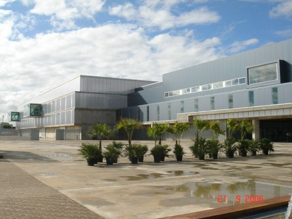

Jornadas de Cocina Pacense
Presentamos el mayor evento gastronómico jamas realizado en Extremadura.
Nos orgullece anunciar la primera edición de las Jornadas de Cocina Pacense, que tendrán lugar del 10 al 15 de enero de 2026 en nuestro el recinto ferial IFEBA.
Durante estas jornadas, destacados chefs locales e internacionales compartirán sus conocimientos y técnicas culinarias a través de demostraciones en vivo, talleres interactivos y degustaciones exclusivas.
El evento está diseñado para amantes de la gastronomía de todas las edades y niveles de experiencia, ofreciendo una oportunidad única para aprender, experimentar y disfrutar de la rica tradición culinaria de Badajoz.
Como unirse al evento
La entrada es gratuita, pero se recomienda reservar plaza con antelación debido a la alta demanda esperada. Para más información sobre el programa y los ponentes, visite nuestro sitio web oficial.
Agenda
A continuación puede encontrar la agenda del evento
- Día 1: Inauguración y bienvenida
- Día 2: Taller de cocina tradicional pacense
- Día 3: Demostración de técnicas culinarias modernas
- Día 4: Concurso de chefs locales
- Día 5: Degustación de platos regionales
- Día 6: Clausura y entrega de premios